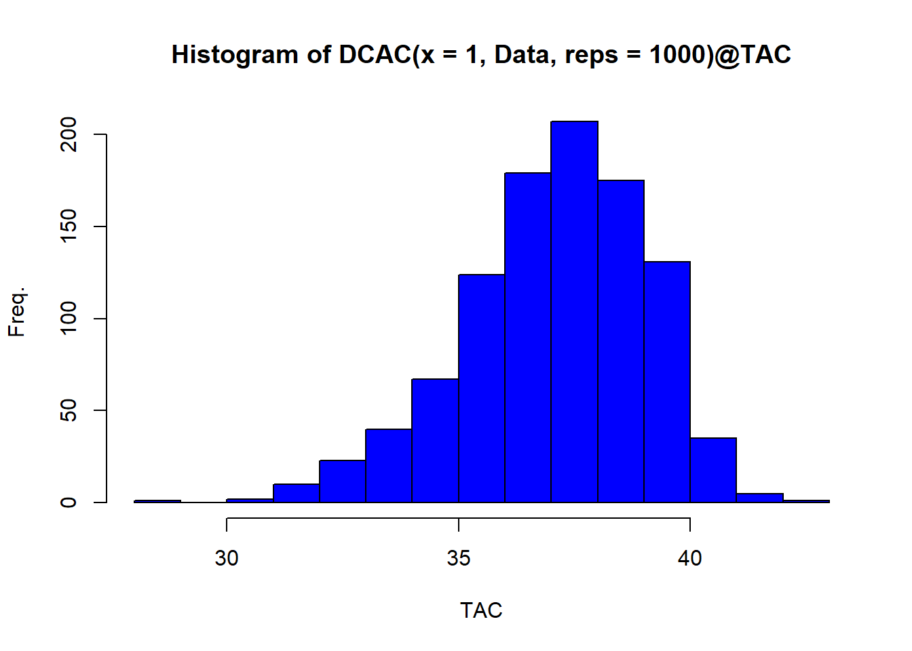
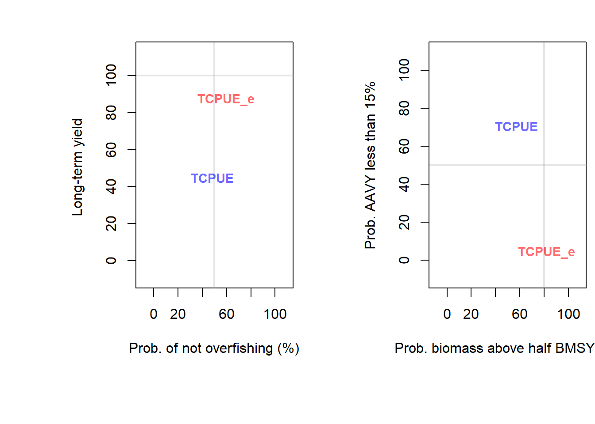

Chapter 26 Developing Custom Management Procedures
DLMtool was designed to be extensible in order to promote the development of new Management Procedures. In this chapter we design a series of new Management Procedures that include spatial controls and input controls in the form of size limit restrictions.
If you wish, you can also add your newly developed MPs to the DLMtool package so they are accessible to other uses. Of course you will be credited as the author. Please contact us for details how to do this.
As we saw before, real data are stored in a class of objects Data.
The DLMtool MSE function generates simulated data and puts it in exactly the same format as real data. This is highly desirable because it means that the same MP code that is tested in the MSE can then be used to make management recommendations.
If an MP is coded incorrectly it may catastrophically fail MSE testing and will therefore be excluded from use in management.
26.1 The Anatomy of an MP
Let’s examine an existing output MP to identify the MP data requirements.
## [1] "AvC" "BK" "BK_CC" "BK_ML" "CC1"
## [6] "CC2" "CC3" "CC4" "CC5" "CompSRA"
## [11] "CompSRA4010" "CurC" "DAAC" "DBSRA" "DBSRA_40"
## [16] "DBSRA4010" "DCAC" "DCAC_40" "DCAC_ML" "DCAC4010"
## [21] "DCACs" "DD" "DD4010" "DepF" "DynF"
## [26] "Fadapt" "Fdem" "Fdem_CC" "Fdem_ML" "Fratio"
## [31] "Fratio_CC" "Fratio_ML" "Fratio4010" "GB_CC" "GB_slope"
## [36] "GB_target" "Gcontrol" "HDAAC" "ICI" "ICI2"
## [41] "Iratio" "Islope1" "Islope2" "Islope3" "Islope4"
## [46] "IT10" "IT5" "Itarget1" "Itarget2" "Itarget3"
## [51] "Itarget4" "ITM" "L95target" "Lratio_BHI" "Lratio_BHI2"
## [56] "Lratio_BHI3" "LstepCC1" "LstepCC2" "LstepCC3" "LstepCC4"
## [61] "Ltarget1" "Ltarget2" "Ltarget3" "Ltarget4" "MCD"
## [66] "MCD4010" "Rcontrol" "Rcontrol2" "SBT1" "SBT2"
## [71] "SPmod" "SPMSY" "SPslope" "SPSRA" "SPSRA_ML"
## [76] "YPR" "YPR_CC" "YPR_ML" "avgMP"Since we’ve seen it used as a default MP in lots of the examples above, lets learn more about DCAC
We can even see all the code for this MP by simply typing the name of the MP into the console (this is a fantastic advantage of using R - there is complete transparency about package functions):
## function(x, Data, reps = 100, plot=FALSE) {
## rundcac <- DCAC_(x, Data, reps, updateD=TRUE)
## TAC <- TACfilter(rundcac$dcac)
##
## if (plot) DCAC_plot(x, Data, dcac=rundcac$dcac, TAC, Bt_K=rundcac$Bt_K, yrs=1:length(Data@Year))
##
## Rec <- new("Rec")
## Rec@TAC <- TAC
## Rec
## }
## <bytecode: 0x000001b0e8653c30>
## <environment: namespace:DLMtool>
## attr(,"class")
## [1] "MP"“Crikey that looks complicated!” might be your first reaction. However this output MP function is easily demystified.
Like all MPs it has four arguments: x, Data, reps and plot (the last argument was added recently and is optional).
The argument x is the position in the Data object. When real data are stored in a Data object, there is only one position - there is only one real data set.
However, in MSE we conduct many simulations and x refers to simulated data from simulation number x. Any single parameters such as natural mortality rate (Mort) are a vector (nsim long). See Data@Mort[x] in the DCAC code. Any time series such as annual catches or relative abundance indices, are a matrix of nsim rows and nyears columns.
A range of objects of class Data are available:
## [1] "Atlantic_mackerel" "China_rockfish" "Cobia"
## [4] "Example_datafile" "Gulf_blue_tilefish" "ourReefFish"
## [7] "Red_snapper" "SimulatedData" "China_rockfish2"
## [10] "Data" "Madeup" "Recs"For simplicity lets use a Data object with just two simulations, SimulatedData and rename it Data
Since there are only two simulations in this data set (2 positions) we can now see two values of natural mortality rate:
## [1] 0.3178309 0.3055330And a matrix of catches with two rows:
## [,1] [,2] [,3] [,4] [,5] [,6] [,7]
## [1,] 17.93249 77.94086 188.9142 356.8789 476.9043 251.3876 483.1683
## [2,] 45.11819 272.96765 254.9031 833.6652 660.0164 930.0886 820.9845
## [,8] [,9] [,10] [,11] [,12] [,13] [,14]
## [1,] 1437.1550 675.0914 597.1793 993.9574 1370.630 983.1828 1109.963
## [2,] 858.5306 2263.8694 1717.7018 1742.2750 1698.691 1032.4159 2287.460
## [,15] [,16] [,17] [,18] [,19] [,20] [,21]
## [1,] 1378.250 1757.686 1059.046 1623.116 1110.535 1170.769 1573.469
## [2,] 3306.927 2545.953 2140.442 2247.550 2003.491 2424.214 1320.244
## [,22] [,23] [,24] [,25] [,26] [,27] [,28]
## [1,] 1177.603 1495.526 899.6538 1327.325 855.511 1557.337 1452.049
## [2,] 2908.740 1448.226 1312.5287 1167.325 2160.353 1611.643 2320.037
## [,29] [,30] [,31] [,32] [,33] [,34] [,35]
## [1,] 525.2323 727.7376 1860.114 1156.2178 669.2713 1128.633 845.7756
## [2,] 1895.7002 1248.7462 1233.820 903.9822 1666.1382 1227.194 963.6662
## [,36] [,37] [,38] [,39] [,40] [,41] [,42]
## [1,] 2027.297 1536.299 2077.296 1193.401 1682.116 1502.634 804.0391
## [2,] 1614.708 1719.729 1194.298 1312.921 1136.461 1135.720 1214.5330
## [,43] [,44] [,45] [,46] [,47] [,48] [,49]
## [1,] 1538.469 1321.569 1665.702 1226.550 1280.9438 895.6957 2269.158
## [2,] 2360.975 1141.793 2103.845 1508.142 946.3396 2077.0564 1082.846
## [,50]
## [1,] 976.7893
## [2,] 1215.4729We could generate a single TAC recommendation from these data using DCAC by specifying position 1 (for the first simulation) and by setting reps=1 (we want a single DCAC TAC recommendation)
## TAC (median)
## 840.1807If we wanted a stochastic estimate of the TAC we could increase the number of reps:

26.2 A Constant Catch MP
We’ve now got a better idea of the anatomy of an MP. It is a function that must accept three arguments (we will ignore plot for now):
- x: a simulation number
- Data: an object of class
Data - reps: the MP can provide a sample of TACs
repslong.
Let’s have a go at designing our own custom MP that can work with DLMtool. We’re going to develop an MP that sets the TAC as the ‘3rd highest catch’.
We decide to call our function THC
THC<-function(x, Data, reps){
# Find the position of third highest catch
THCpos<-order(Data@Cat[x,],decreasing=T)[3]
# Make this the mean TAC recommendation
THCmu<-Data@Cat[x,THCpos]
# A sample of the THC is taken according to a fixed CV of 10%
TACs <- THCmu * exp(rnorm(reps, -0.1^2/2, 0.1)) # this is a lognormal distribution
Rec <- new("Rec") # create a 'Rec'object
Rec@TAC <- TACs # assign the TACs to the TAC slot
Rec # return the Rec object
}To recap that’s just seven lines of code:
THC<-function(x, Data, reps){
THCpos<-order(Data@Cat[x,],decreasing=T)[3]
THCmu<-Data@Cat[x,THCpos]
Rec <- new("Rec")
Rec@TAC <- THCmu * exp(rnorm(reps, -0.1^2/2, 0.1))
Rec
}We can quickly test our new MP for the example Data object
## [1] 2190.356 2183.969 2127.416 2004.166 2115.241 2094.272 1943.361
## [8] 2188.873 2091.100 1859.232Now that we know it works, to make the function compatible with the DLMtool package we have to assign it the class ‘MP’ so that DLMtool recognizes the function as a management procedure
If we want to run the MSE in parallel we need to export the newly created function to the cluster:
26.3 A More Complex MP
The THC MP is simple and frankly not a great performer (depending on depletion, life-history, adherence to TAC recommendations).
Let’s innovate and create a brand new MP that could suit a catch-data-only stock like Indian Ocean Longtail tuna!
It may be possible to choose a single fleet and establish a catch rate that is ‘reasonable’ or ‘fairly productive’ relative to current catch rates. This could be for example, 40% of the highest catch rate observed for this fleet or, for example, 150% of current cpue levels.
It is straightforward to design an MP that will aim for this target index level by making adjustments to the TAC.
We will call this MP TCPUE, short for target catch per unit effort:
TCPUE<-function(x,Data,reps){
mc<-0.05 # max change in TAC
frac<-0.3 # target index is 30% of max
nyears<-length(Data@Ind[x,]) # number of years of data
smoothI<-smooth.spline(Data@Ind[x,]) # smoothed index
targetI<-max(smoothI$y)*frac # target
currentI<-mean(Data@Ind[x,(nyears-2):nyears]) # current index
ratio<-currentI/targetI # ratio currentI/targetI
if(ratio < (1 - mc)) ratio <- 1 - mc # if currentI < targetI
if(ratio > (1 + mc)) ratio <- 1 + mc # if currentI > targetI
Rec <- new("Rec")
Rec@TAC <- Data@MPrec[x] * ratio * exp(rnorm(reps, -Data@CV_Ind[x]^2/2, Data@CV_Ind[x]))
Rec
}The TCPUE function simply decreases the past TAC (stored in Data@MPrec) if the index is lower than the target and increases the TAC if the index is higher than the target.
All that is left is to make it compatible with DLMtool:
26.4 Beyond the Catch Limit
All management procedures return an object of class ‘Rec’ that contains 13 slots:
## [1] "TAC" "Effort" "Spatial" "Allocate" "LR5" "LFR"
## [7] "HS" "Rmaxlen" "L5" "LFS" "Vmaxlen" "Fdisc"
## [13] "Misc"We’ve already seen the TAC slot in the previous exercise. The remaining slots relate to various forms of input control:
- Effort (total allowable effort (TAE) relative to last historical year)
- Spatial - Fraction of each area that is open
- Allocate - Allocation of effort from closed areas to open areas
- LR5 - Length at 5% retention
- LFR - Length at 100% retention
- HS - Upper slot limit
- Rmaxlen - Retention of the maximum length class
- L5 - Length at 5% selection (e.g a change in gear type)
- LFS - Length at 100% selection (e.g a change in gear type)
- Vmaxlen - Selectivity of the maximum length class
- Fdisc - Update the discard mortality if required
- Misc - An optional slot for storing additional information
The curE MP just keeps effort constant at current levels:
## function(x, Data, reps, plot=FALSE) {
## # current effort
## rec <- new("Rec") # create recommendation object
## rec@Effort <- 1 #* Data@MPeff[x]
## if (plot) curE_plot(x, rec, Data)
## rec
## }
## <bytecode: 0x000001b0e83f6398>
## <environment: namespace:DLMtool>
## attr(,"class")
## [1] "MP"Note that only the Effort slot in the Rec object is populated in this case.
To highlight the differences among Input control MPs examine spatial control MP MRreal that closes area 1 to fishing and reallocates fishing to the open area 2:
## function(x, Data, reps, plot=FALSE) {
## # A Marine reserve in area 1 with spatial reallocation of effort
##
## rec <- new("Rec") # create recommendation object
## rec@Allocate <- 1
## rec@Spatial <- c(0, rep(1, Data@nareas-1))
##
## if (plot) barplot(rec@Spatial, xlab="Area", ylab="Fraction Open", ylim=c(0,1),
## names=1:Data@nareas)
## return(rec)
## }
## <bytecode: 0x000001b0e00c31f8>
## <environment: namespace:DLMtool>
## attr(,"class")
## [1] "MP"In contrast MRnoreal does not reallocate fishing effort:
## function(x, Data, reps, plot=FALSE) {
## # A Marine reserve in area 1 with no spatial reallocation of effort
##
## rec <- new("Rec") # create recommendation object
## rec@Allocate <- 0
## rec@Spatial <- c(0, rep(1, Data@nareas-1))
##
## if (plot) barplot(rec@Spatial, xlab="Area", ylab="Fraction Open", ylim=c(0,1),
## names=1:Data@nareas)
## return(rec)
## }
## <bytecode: 0x000001b0e0175538>
## <environment: namespace:DLMtool>
## attr(,"class")
## [1] "MP"The MP matlenlim only specifies the parameters of length retention using an estimate of length at 50% maturity (Stock@L50):
## function(x, Data, reps, plot=FALSE) {
## # Knife-edge vulnerability at estimated length-at-maturity
## rec <- new("Rec") # create recommendation object
## rec@LFR <- Data@L50[x] # new length at full retention
## rec@LR5 <- rec@LFR * 0.95 # new length at 5% retention
## if(plot) size_lim_plot(x, Data, rec)
## # other slots aren't specified so remain unchanged
## rec
## }
## <bytecode: 0x000001b0e0644350>
## <environment: namespace:DLMtool>
## attr(,"class")
## [1] "MP"26.4.1 An Example Effort Control
Here we will copy and modify the MP we developed earlier to specify a new version of the target catch per unit effort MP (TCPUE) that provides effort recommendations:
TCPUE_e<-function(x,Data,reps){
mc<-0.05 # max change in TAC
frac<-0.3 # target index is 30% of max
nyears<-length(Data@Ind[x,]) # number of years of data
smoothI<-smooth.spline(Data@Ind[x,]) # smoothed index
targetI<-max(smoothI$y)*frac # target
currentI<-mean(Data@Ind[x,(nyears-2):nyears]) # current index
ratio<-currentI/targetI # ratio currentI/targetI
if(ratio < (1 - mc)) ratio <- 1 - mc # if currentI < targetI
if(ratio > (1 + mc)) ratio <- 1 + mc # if currentI > targetI
rec <- new("Rec")
rec@Effort <- Data@MPeff[x] * ratio
rec
}There have been surprisingly few changes to make TCPUE an input control MP that sets total allowable effort.
- We have had to use stored recommendations of effort in the
Data@MPeffslot, and - The final line of the MP is our input control recommendatation that only modified the Effort.
That is all.
Again, we need to assign our new function to class MP and export it to the cluster:
Let’s test the two MPs and see how they peform:
## Exporting custom MPs in global environment## Running MSE in parallel on 8 processors## MSE completed
## PNOF B50 LTY VY
## TCPUE 48.1 57.2 45.0 70.8
## TCPUE_e 59.3 82.0 87.1 4.2